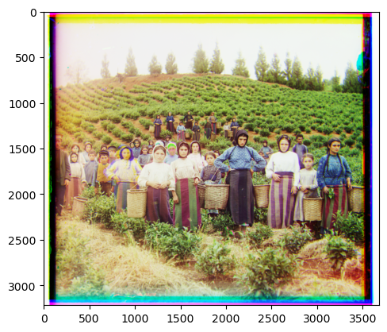

Overview
In project 1, we were given the same image in three color channels: red, green, and blue.

In project 1, we were given the same image in three color channels: red, green, and blue.
To generate an image with color, we needed to stack the three images on top of each other which will produce an image with the colors. Since we already have the colors, the first step would require loading in the image such that we have a variable that holds each color channel. The alignment algorithm compares two of the color channels at a time. One channel will act as the base and the other - the top channel - will be compared to the base channel. Then, this approach would require sampling a box of around 30 pixels of the top channel and calculating the distance between each position and the base channel. The shift that returns the closest distance between the channels would be the best split and the top image would be rolled by that amount via np.roll. This process is then repeated with the other color’s channel acting as the top channel and the same base channel from the first step. Then, all three channels would be aligned and can be stacked to produce the image in color.

|
|
As shown the before and after in monastery.jpg, the algorithm moved the blue and red channels based on the green channel to align the each pixel from each pixel to produce the after image filled with color.
Despite its accuracy, this naive approach would take too long to run on larger files. The solution to resolve this would involve rescaling the image to smaller
sizes such that there are several layers of the same image but each layer is scaled by 2 until it hits the size of the original .tif. Then, I ran the alignment
algorithm implemented in part 1 on that image and rescaled the displacement vector for each level. I repeated those steps recursively till it hit the level with
the actual size of the image and rolled the image by shift that was determined by accumulative rolls.
The reason this makes the run-time much faster is because the amount of data that needs to be searched through significantly decreases as the size of the images
being searched decreases. It also maintains its accuracy because amount of the displacement is being adjusted for each layer.
red color channel displacement vector: (1, 6) |
red color channel displacement vector: (-2, -3) |
red color channel displacement vector: (1, 4) |
|
red color channel displacement vector: (17, 57) |
red color channel displacement vector: (4, 96) |
 red color channel displacement vector: (-2, 64) |
red color channel displacement vector: (-5, 58) |
red color channel displacement vector: (-16, 107) |
red color channel displacement vector: (10, 57) |
red color channel displacement vector: (27, 42) |
red color channel displacement vector: (5, 48) |
red color channel displacement vector: (3, 63) |
red color channel displacement vector: (-16, 107) |
red color channel displacement vector: (8, 98) |